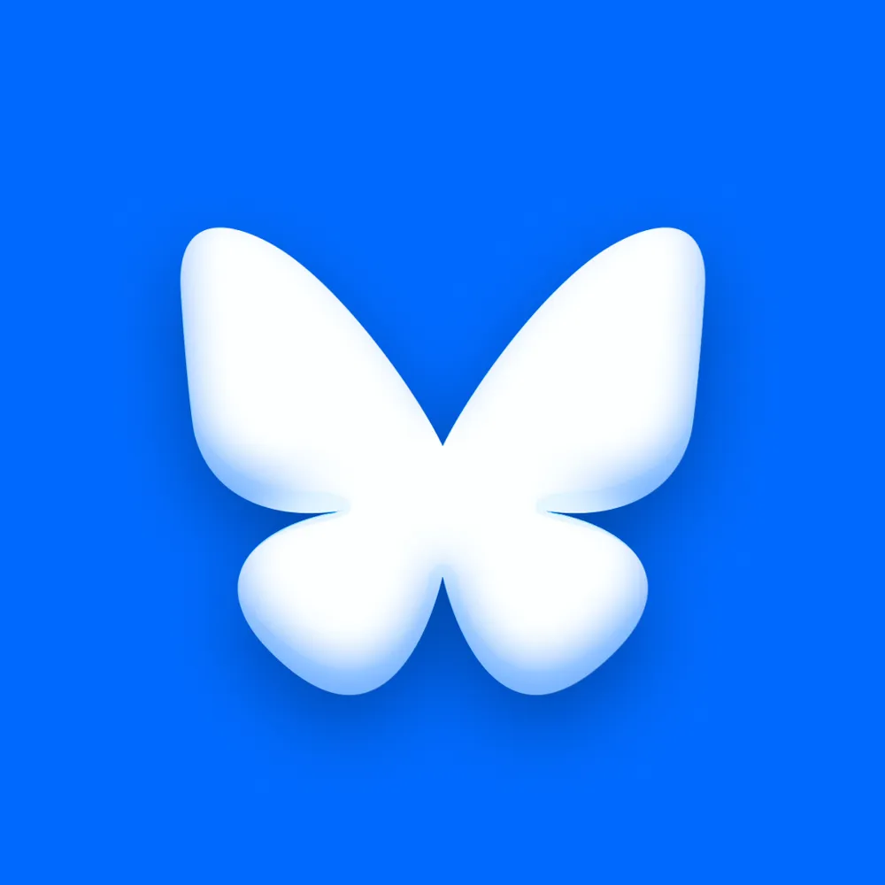

Bluesky
@bsky.app
official Bluesky account (check username👆)
Bugs, feature requests, feedback: support@bsky.app

Suggested for you
Posts
Media
Videos
Feeds
Starter Packs
Pinned
👋 Bluesky is an open social network that gives creators independence from platforms, developers the freedom to build, and users a choice in their experience. We're so excited to have you here!
We share Bluesky updates & news from this account. A quick orientation thread: 🧵✨
THE INTERNET FOR $600: This social media app now boasts at least 200 "Jeopardy!" contestants and champions (including one host).
Joshua J. Friedman
@joshuajfriedman.com
· Aug 17, 2024
Bluesky users include about 50 Jeopardy! champions who put that info in their bio! And 10 who use a photo with the host as their profile pic
Extremely cool job alert!

alex benzer
@alexbenzer.com
· 9d
we're hiring a Lead Product Designer at Bluesky.
we've built the foundation — now we need someone to lead our design team and bring a fresh vision for how this app should look and feel.
crazy fun & rare opportunity for the right leader!
jobs.gem.com/bluesky/am9i...

updated Bluesky post embeds are live
videos now play inline in most browsers (except Firefox)
feedback welcome!
The European Commission () has updated the top follow buttons on its web page. Mastodon and Bluesky are in, X is out. commission.europa.eu/index_en
Does wild yeast collected by Bluesky users make butterfly-shaped bread? Find out in the #Breadsky feed! bsky.app/profile/did:...
Keep it private!
We’re adding more ways to connect with other Atmosphere apps. You can now launch Germ’s E2E encrypted messaging from Bluesky profiles. Check out for more.
v1.121 is live!
We've increased the quality of photos in posts by doubling the max file size to 2MB and the resolution limit to 4000x4000.
Plus, posts with multiple photos now appear in a carousel so you can show off your photography in all its glory.
We hear and appreciate your feedback on the photo carousel. We're going to put it back in the oven for now. We'll consider bringing it back for posts with more than four photos (or videos) when we add support for that.
Read David Imel’s summary of ATmosphereConf, a recent gathering of folks building on the AT Protocol: “this conference is nerdy, it’s niche, and most of the people here think they might just save the internet”
davidimel.substack.com/p/bluesky-is...
Who else has baseball fever? Get in the swing of the season with this starter pack for following the minor leagues bsky.app/profile/jenr...
jen ramos-eisen
@jenramose.online
· 1mo
probably long past time I actually did this but hello howdy here's a starter pack for following people in and around the minor leagues go.bsky.app/ChVvEPp
albert-breer.bsky.social
@albert-breer.bsky.social
· 1mo
We're doing an AMA here—so leave all questions in this link, I'll quote tweet them, and answer between 4 and 4:30 p.m. ET today.
Anything you got ...
bsky.app/profile/surf...
The application has remained stable since the evening of April 16 and we have seen no evidence of unauthorized access to private user data. Given the ongoing stability, this will be our final update.
Bluesky is looking for a design research contractor
big plus if you know Bluesky well
who's the best design researcher you know? nominate them (or yourself)
The application has remained stable since approximately 9 PM PDT, April 16 despite ongoing Distributed Denial-of-Service (DDoS) attacks.
We have not seen any evidence of unauthorized access to private user data.
We will provide our next update on or before the morning of April 20.
The application has remained stable since approximately 9 PM PDT, April 16 despite ongoing Distributed Denial-of-Service (DDoS) attacks. We have not seen any evidence of unauthorized access to private user data. We will provide a further update by end of day.
Our team received a report of intermittent app outages at about 11:40pm PDT on April 15, 2026. They worked through the night to mitigate a sophisticated Distributed Denial-of-Service (DDoS) attack, which intensified throughout the day.
The attack is impacting our application, with users experiencing intermittent interruptions in service for their feeds, notifications, threads and search.
We are experiencing some service interruptions and our team is working on the issue. You can find the latest updates at status.bsky.app or follow .
Did the Artemis II mission get you excited about humanity’s quest for the stars? Follow this astronomy feed, which highlights some of Bluesky’s best posts on our fascinating universe: bsky.app/profile/emil...
More and more organizations, publishers, and creators are abandoning legacy platforms that throttle their reach. Bluesky gives them a direct line to their audiences, without suppression or gatekeeping bsky.app/profile/eff....
Electronic Frontier Foundation
@eff.org
· 1mo
After almost twenty years on the platform, EFF is logging off of X.
This isn’t a decision we made lightly, but it might be overdue. 🧵 (1/5)
www.eff.org/deeplinks/2...
v1.120 is live!
On web, you can now search without your mouse! Press "/" to focus on the search field, and use your up/down keys to move through the results.
Up/down also works when you mention someone with "@" in a post.
We also fixed bugs like feeds not refreshing and threads jumping on scroll.
We've launched an official Japanese account! Give it a follow if you're interested in more Japan-specific information.
Bluesky日本語（公式）
@jp.bsky.app
· 1mo
日本のBlueskyユーザーの皆さん、こんにちは！👋
英語以外の言語として初の、日本語公式アカウントを開設しました。
今後、 @bsky.app などの投稿の翻訳、日本向けの告知などを行っていく予定です。
ぜひこの投稿をリポストして、多くの方にこのアカウントを知っていただけるようご協力ください。
We're improving our recommendations for people to follow on Bluesky. As this ramps up, you should start seeing more relevant suggestions across the app.
alex benzer
@alexbenzer.com
· 2mo
over the weekend, @iwsmith.bsky.social's team rolled out a new version of the "suggested for you" interstitial on profiles that recommends accounts to follow.
follows nearly tripled. should be a noticeable improvement for many of you.
still room to improve, ofc. let us know if you have feedback!
Excited to see our friends launching social sites powered by the open web!
Surf
@surf.social
· 1mo
🌊 🌊 🌊
Today, we’re launching social websites, a new kind of online destination. These blend posts from Bluesky, Threads, Mastodon and more, plus YouTube, podcasts and your favorite publications to create community sites based around the things that matter to you.
about.surf.social/surf-launche...
I wrote about why invested in
: philanthropy can act when mission & opportunity align. We believe in 's vision for a better social web—& in ideas (like 's) that grow out of the research ecosystem Knight has long supported. kf.org/kfbluesky
Bluesky
@bsky.app
· 2mo
Last April, we raised $100M in Series B funding. This round gives us the ability to scale our team to meet the rapid growth of Bluesky and the AT Protocol. Read more: bsky.social/about/blog/0...
Last April, we raised $100M in Series B funding. This round gives us the ability to scale our team to meet the rapid growth of Bluesky and the AT Protocol. Read more: bsky.social/about/blog/0...
Thank you to our lead, , as well as , Anthos Capital, Bloomberg Beta, and .
.webp)
v1.119 is live!
Bot labels are here. If you run an automated account, you can now mark it as such in your account settings. The label will show up on your profile and posts so people know what's a bot and what's not.
Blueskyの新たな章が始まります。創業者ジェイ・グレイバーがCEOを退任し、チーフ・イノベーションオフィサーに就任。元Automattic（WordPress.com）のトニ・シュナイダーが暫定CEOを務めます。
新CEOのオープンソース経営の経験と、創業者がイノベーションに集中する体制の両輪で、分散型ソーシャルの未来をさらに加速させていきます。
bsky.social/about/blog/0...
Welcome to the team, Toni!
Toni Schneider
@toni.bsky.team
· 2mo
I'm thrilled to announce that I'll be joining Bluesky as interim CEO. I deeply believe in what this team has built and the open social web they're fighting for. More here: toni.org/2026/03/09/c...
Thank you, Jay! None of this would exist without you.
Jay 🦋
@jay.bsky.team
· 2mo
Some personal news: I’m transitioning from CEO to a new role as Bluesky’s Chief Innovation Officer! I’m excited to welcome @toni.bsky.team as our interim CEO.
More here: bsky.social/about/blog/0...
情報が速く広がる時代、災害や非常時に必要なのは拡散ではなく見極める力です。
Blueskyは3月8日（日）〜10日（火）の3日間、「確かな情報を得る訓練」3DAYアクションを実施します。
混乱時に備え、信頼できる情報源を探してフォロー・ブックマーク。そして、あなたの見つけた情報源やヒントをハッシュタグ #確かな情報を得る訓練 をつけて共有しましょう。
▼詳細はこちらのブログ記事で
bsky.social/about/blog/0...
With today's update, you can now rearrange your pinned feeds by simply dragging and dropping. Much more convenient!
To edit your pinned feeds, go here: bsky.app/settings/sav...
V1.118がリリースされました。
モバイルアプリを離れることなく、投稿をインライン翻訳できるようになりました。
投稿テキスト下の「翻訳」をタップするだけで、スマートフォン内蔵機能で訳されます。
v1.118 rolls out today!
New in this update: You can now translate posts without leaving the app.
Simply tap "translate" on mobile and your phone's built-in translation takes it from there.
Congrats to the team !
Tangled
@tangled.org
· 2mo
today, we're announcing our €3,8M ($4.5M) seed financing round, led by byFounders with participation from Bain Capital Crypto, Antler, Thomas Dohmke (former CEO of GitHub), Avery Pennarun (CEO of Tailscale) among other incredible angels.
read more on what's next: blog.tangled.org/seed
U-S-A 🇺🇸
FLAVOR FLAV ⏰
@flavorflav.bsky.social
· 2mo
If the USA Women’s Hockey team wants a real celebration and invite ,,, I’ll host them in Las Vegas. Do some nice dinners and shows and good times.
I’m sure I can get a hotel and airline to help me out here and celebrate these women for real for real. 👍🏾👍🏾👍🏾
v1.117 is live!
We rolled out support for Bandcamp embeds. Now you can play songs right inside posts!
We're big fans of Bandcamp and everything they do to support artists.
Upgrade to the newest app version and give it a try 👇
caribouband.bandcamp.com/album/butter...
Our design team is growing by 100%. Join us!
alex benzer
@alexbenzer.com
· 3mo
we're hiring a senior product designer at Bluesky.
you'd be designer #2. no design-by-committee, no six-month review cycles. just ship great stuff to millions of people.
come level up this app with us! apply here: jobs.gem.com/bluesky/am9i...
The Benito effect... activity on Bluesky spiked 70% during the Super Bowl 👀
We've updated our welcome screen in v1.116 with some fresh artwork by
Includes different versions for light and dark themes!
v1.116 is rolling out now!
For all the overthinkers and perfectionists out there, we're launching Drafts.
In 2025, as Bluesky grew from 25M to 42M users, we took actions to keep it welcoming, using proactive design to reduce toxic content by 79%. Our 2025 Transparency Report shares how we're building a safer platform while keeping a transparent and human-centered approach: bsky.social/about/blog/0...
変化の激しかった2025年を経て、2026年の展望と、理想のオンラインの未来を作るためにできることは何かについて考えてみました。
私たちの予測をいくつかご紹介します。皆さんの考えもぜひ教えてください！ bsky.social/about/blog/0...
After a whirlwind 2025, we took a pause to reflect on what 2026 might bring, and how Bluesky can help build the sort of future we all want to see online. Check out a few of our predictions, and let us know if you agree: bsky.social/about/blog/0...
2026 is the year Bluesky and the Atmosphere really come alive
here's what's next
bsky.social/about/blog/0...
We have an incredible community of sports writers who have helped Bluesky become a meaningful place for discussing live events and news. Ahead of today's playoffs, we're sharing the below starter pack as just a sampling of names that have brought us expert coverage throughout the year.
Hey, so. The team made this thing. It's a “Live Event” on Discover and Explore for the NFL games. It’s on a predetermined schedule. If you're not in the mood for it, you can dismiss it. It’ll go up later today.
Finance Bluesky is hitting all-time highs lately, thanks to you. Let's spread the word, and make 2026 our breakout year bsky.social/about/blog/0...
stream.place links are now supported in the Live Now beta!
OTA update rolling out today.
love what 's building. when you stream there, your LIVE status on Bluesky is auto-updated.
very cool demonstration of how Atmosphere apps can interconnect and benefit each other.
📢 v1.114 is rolling out!
Today, we're expanding access to the Live Now beta to everyone.
This experimental feature lets you add a temporary LIVE badge to your avatar, helping others discover that you're currently live-streaming on Twitch. They can click it to land directly on your stream page.
Other social apps punish links — we think linking out should be easy. Live Now is part of how we're making that happen.
While in beta, Live Now is currently limited to Twitch links. Support for other streaming platforms may follow as we learn from the beta.
backend eng? come build this app with us.
jobs.gem.com/bluesky/am9i...
we’re a tiny team building a very big app.
if that sounds fun, lfg!
📢 v1.113 is rolling out now!
This release focuses on fixing bugs and improving the stability of the app. We also fixed an issue some of you reported about the app locking up while watching fullscreen videos.
With that done, we have some bigger things planned to kick 2026 off right — more soon!
Want to discover great posts beyond who you already follow? The For You feed, built by , is a personalized algorithmic feed based on your likes. It's one of our favorites for finding cool conversations across the network.
Try it here: bsky.app/profile/spac...